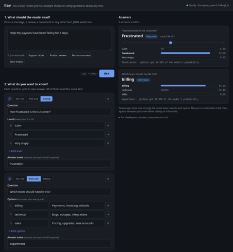

llav
Ask a local language model yes/no, multiple-choice and rating questions about a piece of text, and get probabilities back instead of generated text.
What it is
llav runs an open model through llama.cpp on your own machine. The default is Qwen3.5-4B, but it is not the only choice: any GGUF chat model can be tried, llav checks at startup that it answers with option letters, and five alternatives are pinned for download, from Qwen3.5-2B to Meta's Muse Glimmer 30B.
Its HTTP API has the same shape as TypeSafe's System One API (POST /v1/systemone), so code
written for their Jev model can call llav instead. The question types keep TypeSafe's names:
noul (yes/no), choice (pick one option) and score (a level on a scale).
Standard library only. The one runtime requirement is
llama.cpp's llama-server.
Vulkan, CUDA, Metal, SYCL, ROCm or CPU.
The text is read once and kept, so a follow-up question costs about 0.2 s instead of 3 s on a laptop.
A header flags answers the options do not fit, and an evaluation script measures accuracy and calibration on your own labelled data.
Independent project; not affiliated with or endorsed by TypeSafe. Jev and TypeSafe are the property of their respective owners. llav reproduces the public request/response shape, not Jev's model.
How it works
Each question is one forward pass. llav reads how likely the model is to answer with each option's letter and normalizes that over the options. Nothing is sampled, so there is no output to parse, no reasoning to wait for, and nothing to retry when a model answers in prose.
When a request asks several questions about the same text, llav reads the text once and shares it between them, and keeps it for later requests. An optional native helper answers all of a request's questions in one batched pass on a GPU.
Quick start
- Install llama.cpp so that
llama-serveris on yourPATH:brew install llama.cpp(macOS, Linux),winget install llama.cpp(Windows),pacman -S llama-cpp(Arch), or a release build for your GPU. llav is tested with build 10809 and later. - Get llav and a model (4.6 GB, SHA-256 checked):
Passgit clone https://github.com/wistrand/llav.git && cd llav scripts/fetch-model.sh ~/modelsqwen3.5-2b,granite-4.0-h-tiny,granite-4.2-3b,smollm3-3bormuse-glimmer-30bas a second argument for an alternative. - Serve. Nothing needs installing:
PYTHONPATH=src python3 -m llav --gguf ~/models/Qwen_Qwen3.5-4B-Q8_0.gguf --port 8080 --web-ui--web-uiserves a page athttp://localhost:8080/for trying questions in a browser.
The web UI, answering a rating and a choice question about a support ticket. - Ask:
curl -s localhost:8080/v1/systemone -H 'Content-Type: application/json' -d '{ "state": "Help! My payouts have been failing for 3 days.", "model": "llav-latest", "questions": { "is_urgent": {"type": "noul", "instructions": "Does this convey urgency?"}, "department": {"type": "choice", "instructions": "Which team should handle this?", "criteria": {"billing": "Payments, invoicing, refunds", "technical": "Bugs, outages, integrations", "sales": "Pricing, upgrades, new accounts"}}, "frustration": {"type": "score", "instructions": "How frustrated is the customer?", "criteria": ["Calm", "Frustrated", "Very angry"]} } }'{ "model": "llav-qwen_qwen3.5-4b-q8_0", "answers": { "is_urgent": {"type": "noul", "noul": 0.997}, "department": {"type": "choice", "choice": "billing", "probabilities": {"billing": 0.849, "technical": 0.150, "sales": 0.002}, "confidence": 0.605}, "frustration": {"type": "score", "score": 0.937, "legend": {"0": "Calm", "1": "Frustrated", "2": "Very angry"}, "probabilities": {"0": 0.065, "1": 0.933, "2": 0.002}, "confidence": 0.769} }, "usage": {"input_tokens": 249, "output_tokens": 0} }Abridged: real responses carry full-precision floats.
{kind=link}
API
POST /v1/systemone takes {"state", "model", "questions"}. state is the text
the questions are about, as a string or a JSON object or array. Each question has a type,
instructions and criteria.
| Type | criteria | Answer |
|---|---|---|
noul | optional {"true": ..., "false": ...} | noul: probability of yes |
choice | {option: description or null}, 2 to 26 options | choice, probabilities, confidence |
score | ordered array of 2 to 10 levels | score, legend, probabilities, confidence |
Write the actual question in instructions
"Do mitochondria play a role in leaf remodelling?" works better than a generic "Is the answer to the research question yes?" pointing into the text: on medical yes/no questions it raised accuracy from 80.7% to 86.0%.
Headers
X-Llav-Candidate-Mass: per question, how much of the model's probability went to the option letters. Well below 1 means the model wanted to say something else, for example that no option fits.X-Llav-Calibration:none, or the id of a temperature file loaded with--calibration.X-Llav-Seconds,X-Llav-Shared-State-Tokens,X-Llav-State-Cache: timing and reuse.
The full contract is in openapi.json,
also served at GET /openapi.json.
Results
Accuracy on 1,176 labelled questions: samples of public datasets (DBpedia, BoolQ, AG News, Banking77 card intents, Yelp stars) plus SemIf's 144 authored decisions on evidence, rules and candidates. Every system got the same questions. ECE is the calibration error of the top answer's probability; lower is better.
| System | Accuracy | ECE | Right when above 0.9 | Changes with option order |
|---|---|---|---|---|
| Jev (TypeSafe, hosted) | 89.0% | 0.040 | 96.3% | 6% |
| llav, Qwen3.5-4B | 82.9% | 0.069 | 93.2% | 19% |
| llav, Muse Glimmer 30B | 82.9% | 0.037 | 97.3% | not run |
| von 1.2 (trained encoder) | 76.4% | 0.115 | 89.3% | 0% |
| Laya typed-decisions (trained encoder) | 74.8% | 0.042 | 96.0% | 30% |
| CLM (Qwen3-8B with a trained head) | 39.7% | 0.261 | 62.2% | 0% |
- Jev leads by 6 points, most of it on confusable options (13.5 points on the Banking77 card intents and on Yelp star ratings); on clear questions the gap is 0 to 1 point.
- llav's probabilities are overconfident at the top. One temperature fitted on your own labelled data
(
scripts/evaluate.py fit, loaded with--calibration) cut ECE from 0.069 to 0.023 on held-out questions. - The small trained encoders are about three times faster but cannot read a claim against evidence: they fall 21 to 65 points behind on SemIf's evidence, rule and candidate questions.
On Jevals' published tasks
Jevals scores Jev and six LLMs on fixed items against human labels. llav rebuilds two of its tasks item for item and computes the same Decision Score: 0 is guessing by the label frequencies, 100 is always right with full confidence. Rerunning Jev through OpenRouter reproduced its published numbers, so the rows compare fairly.
| System | PubMedQA score | PubMedQA accuracy | HelpSteer2 score | HelpSteer2 accuracy |
|---|---|---|---|---|
| Gemini 3.8 Flash | 73.0 | 92.5% | 4.6 | 42.4% |
| Jev | 69.0 | 91.3% | 9.2 | 41.3% |
| DeepSeek V4.1 Flash | 47.5 | 83.7% | -19.0 | 34.7% |
| llav, Qwen3.5-4B | 46.5 | 80.7% | -11.1 | 39.0% |
| von 1.2 | 7.7 | 68.3% | -17.0 | 37.3% |
| Label frequencies, reads nothing | 0 | 62.0% | 0 | 41.7% |
Abridged; all rows, the method and the caveats are in comparisons.md. On HelpSteer2 no model clearly beats guessing.
Speed
Qwen3.5-4B, a 1,800-token text, 10 yes/no questions. "Repeat" is the same text arriving in a later request.
| Machine | First request | Repeat | With the native helper |
|---|---|---|---|
| Laptop, Intel Arc B390, Vulkan | 4.70 s | 1.73 s | 3.86 s / 1.22 s |
| RTX 3090, CUDA | 1.16 s | 0.65 s | 0.75 s / 0.21 s |
For comparison, Jev through OpenRouter answered one to ten questions in 0.3 to 0.4 s per request from a laptop, about 140 ms of it network. A local llav on a GPU was faster; on a laptop's integrated GPU it was slower.
Options
llav --gguf FILE [--port 8080] [--host 127.0.0.1] [--slots 1] [--ctx 8192]
[--api-key KEY] [--model-id ID] [--no-jev-alias] [--queue-timeout 30] [--state-cache 4] [--web-ui]
[--native-readout BIN] [--native-questions 16] [--calibration FILE] [--assistant-prefix TEXT]
[--llama-server BIN] [--llama-port 8089] [--llama-arg ARG ...]
llav --llama-url http://127.0.0.1:8089 --slot-dir DIR # attach to your own llama-serverWhen attaching to your own llama-server, start it with
--ctx-checkpoints 0 --slot-save-path DIR --swa-full --jinja.
python3 -m llav --help describes every flag.
Further reading
- README: the full guide.
- research.md: accuracy, calibration and the approaches tried and rejected.
- performance.md: where a request's time goes, per machine.
- comparisons.md: other models and System One systems on the same questions.